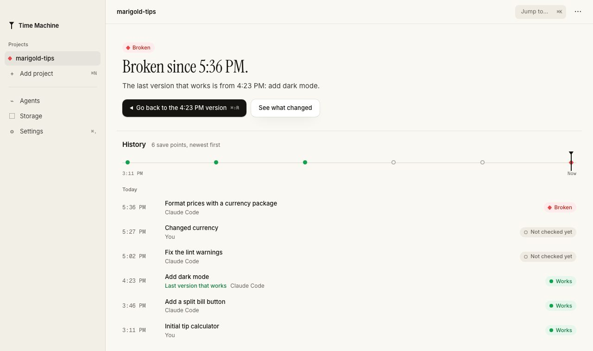
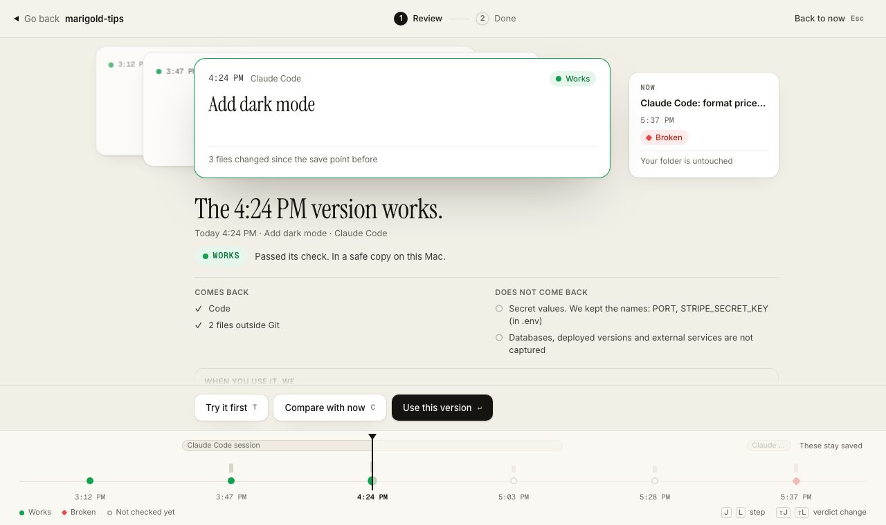

Early. The tm command line tool works today.
Not on npm yet · Mac app in development
Rewind to what worked.
Your agent can break things. Time Machine proves which version still passes your tests and gets you back to it.
Save before the change. Check in a separate copy. Bring back the version that passed.
cp-0006 · Added a dependency · not checked yet
Synthetic demo. Turn the dial, then Check. Verdicts replay a recorded tm demo run.
01 The problem
Undo goes back one edit. Then what?
By the time you run your tests, the working version is several steps back. Some of those steps were shell commands.
"Does not track files modified by Bash commands."
- Dark mode looks right. Saved.
cp-0003 - You: "Fix the lint warnings."
- Agent: fixed lint warnings
cp-0004 - Changed currency
cp-0005 - Added a dependency
cp-0006 - You run
npm test. Exit code 1.
Dramatized on a synthetic demo project. Save point IDs and verdicts come from a real tm demo run. Times other than 10:42 and 10:51 are illustrative.
Claude Code rewindBuilt in checkpoints
Time Machinetm, today
Recognized secrets are filtered. Screening cannot recognize every arbitrary secret. Databases and deployed versions are not captured.
02 The proof · tm find-good
Broken. Broken. Broken. Works.
Time Machine rebuilds each save point in a separate copy, turns the network off, and runs your own check. Newest first, until one passes. Your folder is never touched.
Safe copy · Network off
Added a dependency
cp-0006 · 11:12
Broken
The check failed with exit code 1.
Safe copy · Network off
Changed currency
cp-0005 · 11:04
Broken
The check failed with exit code 1.
Safe copy · Network off
Agent: fixed lint warnings
cp-0004 · 10:51
Broken
The check failed with exit code 1.
Safe copy · Network off
Added dark mode
cp-0003 · 10:42
Works
The check passed.
$ tm find-good cp-0006 FAIL The check failed with exit code 1. cp-0005 FAIL The check failed with exit code 1. cp-0004 FAIL The check failed with exit code 1. cp-0003 PASS The check passed. PASS cp-0003 is the newest version that works. Next: tm recover cp-0003 $ tm recover cp-0003 Recovery ready for cp-0003. Nothing was pushed, merged or deployed. Your folder and branch were not touched. Branch tm/recover/cp-0003 Saved first cp-0007, your state before this recovery Not restored Secret values in .env: PORT, STRIPE_SECRET_KEY Databases, deployed versions and external services are not captured Manual steps Set PORT in .env in the recovery copy. Set STRIPE_SECRET_KEY in .env in the recovery copy.
Exact text from a real tm demo run on the synthetic Marigold Tips project, shortened. Every save point and report says what was not captured.
03 How it works
Save. Check. Bring back.
Three steps. The CLI, hooks and Mac app share one engine.
Save
Claude Code hooks save before prompts and risky commands. Save points live outside your project folder.
$ tm checkpoint -m "Added dark mode" Saved cp-0003 "Added dark mode" Not checked yet.
Check
Your own test runs in a separate copy, with the network off. One verdict per save point.
$ tm verify cp-0004 FAIL cp-0004 is broken (host mode, network off via sandbox-exec, 0.3 s)
Bring back
A recovery copy on a new branch. Your folder stays untouched. Nothing is pushed or deployed.
$ tm recover cp-0003 Branch tm/recover/cp-0003 Saved first cp-0007
04 Agents
Works with Claude Code. More are planned.
Claude Code hooks are built and tested. Any agent that speaks MCP can call the tools. Hook kits for other agents are planned, not built.
- Claude CodeBuiltHooks save before each prompt and before risky shell commands, and check at the end of each turn.
- Any agent that speaks MCPBuilt7 tools: checkpoint, timeline, diff, verify, find_good, recover and log. The agent calls them when it chooses, so saving is not automatic.
- CursorPlannedIts hooks run before a prompt, before a shell command and when a turn stops. A Time Machine kit is not built yet.
- Codex CLIPlannedIts hooks have the same three moments. A Time Machine kit is not built yet.
- Gemini CLIPlannedIts hooks have the same three moments. A Time Machine kit is not built yet.
- The Mac appIn developmentThe same engine, with a timeline you can see. Not signed or shipped yet.
05 The Mac app In development
The same engine. A timeline you can see.
Every save point with its verdict, what came back and what did not. One button to go back to the last version that works. In development, not signed or shipped.


Engine built, screens in development
- Ask about your historyIn developmentAsk "When did it last work?" and get a short answer that names the save points. Off by default, per project. When you turn it on, it uses Google's Gemini API with your own key.
- Vercel deploys on your timelineIn developmentSee which save point is live. Read only: it never deploys or rolls back.
06 Spec sheet
What works today. What doesn't yet.
No logos and no user counts. Just what is built, and the tests that check it.
Built
tm checkpoint- Save a checkpoint by hand.
tm timeline·tm diff- See every save point and what changed.
tm verify- Run your check in a separate copy, network off.
tm find-good- Find the newest save point that passes.
tm recover- A new branch and a recovery copy. Your folder is never touched.
tm demo- The whole rescue above, on a synthetic app.
- Claude Code hooks · MCP server
- Automatic saves and checks in Claude Code. 7 MCP tools for other agents.
In development
- Mac app
- The same engine, with a timeline you can see. Not signed or shipped yet.
Not on npm yet
- The
tmCLI - Join the waitlist for one email when it is published.
Planned
- Hook kits for Cursor, Codex CLI and Gemini CLI
- Not built yet.
- The Ladder
- Pricing. Nothing is for sale yet.
07 Pricing Planned. Nothing is for sale yet.
The Ladder.
Pro is planned at $9 a month and gets cheaper the longer you stay: $8 from month 7, $7 from month 13, and a $6 floor from month 25. Slide the months.
- Restores are never paywalled. Getting back to a version that works never needs a paid plan.
- The CLI is free.
- Students pay half of every step.
Planned. Nothing is for sale yet. Prices can change before launch. Restores are never paywalled.
08 Questions Draft
Short, honest answers.
Does it replace Git?
No. It works next to Git. Save points live outside your project folder, and a recovery is a new branch you can inspect before you merge it yourself.
Does it undo database changes?
No. Databases, deployed versions and external services are not captured. Every recovery report says so.
Does it store my secrets?
Config records key names and fingerprints, not secret values. Known secret patterns are filtered from captured files and logs. Screening cannot recognize every arbitrary secret. Review what you capture.
Does it push or deploy?
No. Nothing is pushed, merged or deployed. Your folder and your branch are not touched.
Does it work without Claude Code?
Yes, through the MCP server or by hand with the tm commands. Automatic hooks exist for Claude Code today. Kits for Cursor, Codex CLI and Gemini CLI are planned.
Is it on npm?
Not yet. Join the waitlist for one email when it is published.
Is the Mac app out?
Not yet. It is in development and not signed or shipped. The screenshots above are a browser preview with demo data.
What does it cost?
Nothing yet, because nothing is for sale. The planned price is The Ladder, above.
09 From the founder Draft
Coding agents are fast. Sometimes they keep going after the thing already worked, and the version that worked is gone.
I'm building Time Machine so that version is never just a memory. It saves, it checks, and it tells you plainly what it could not bring back.
Preston · solo founder · preston@unvibe.site
Draft letter. Preston will rewrite it in his own words.
Build with a way back.
One email when the CLI is on npm and the Mac app is ready. Nothing else.